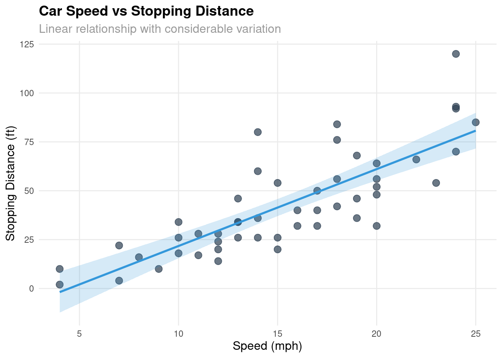
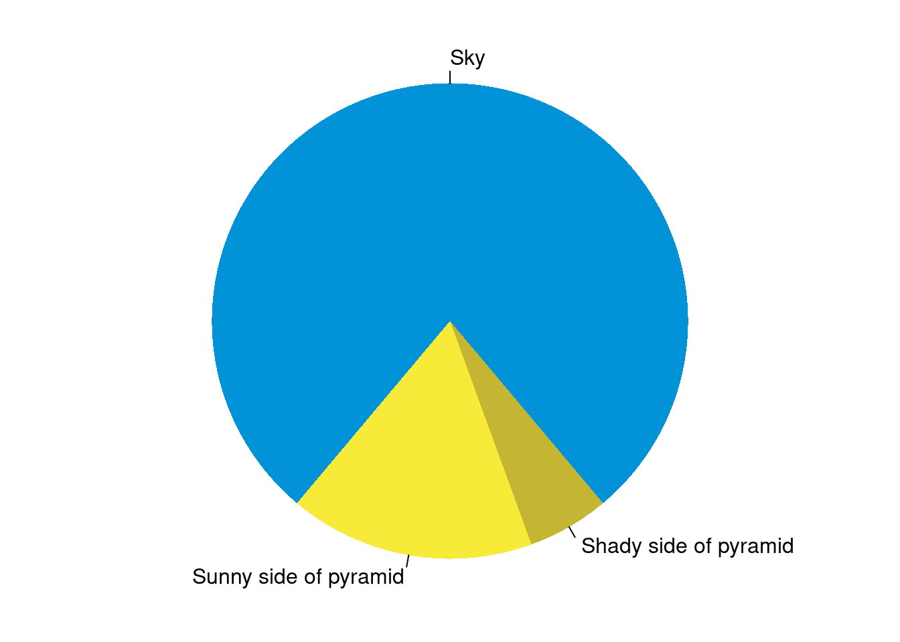

An introduction to R Markdown and its capabilities for reproducible research
Author
Gustavo Togeiro de Alckmin
Published
July 23, 2015
R Markdown for Reproducible Research
This is an R Markdown document demonstrating the power of literate programming. Markdown is a simple formatting syntax for authoring HTML, PDF, and MS Word documents. For more details on using R Markdown see http://rmarkdown.rstudio.com.
R Markdown has been instrumental in my research workflow, allowing me to combine code, analysis, and narrative in a single document. This is particularly valuable in agricultural research where reproducibility and transparency are crucial.
Embedding R Code
You can embed an R code chunk like this:
Code
# Load necessary librarieslibrary(ggplot2)# Examine the built-in cars datasetsummary(cars)
speed dist
Min. : 4.0 Min. : 2.00
1st Qu.:12.0 1st Qu.: 26.00
Median :15.0 Median : 36.00
Mean :15.4 Mean : 42.98
3rd Qu.:19.0 3rd Qu.: 56.00
Max. :25.0 Max. :120.00
Code
# Fit a linear modelfit <-lm(dist ~ speed, data = cars)summary(fit)
Call:
lm(formula = dist ~ speed, data = cars)
Residuals:
Min 1Q Median 3Q Max
-29.069 -9.525 -2.272 9.215 43.201
Coefficients:
Estimate Std. Error t value Pr(>|t|)
(Intercept) -17.5791 6.7584 -2.601 0.0123 *
speed 3.9324 0.4155 9.464 1.49e-12 ***
---
Signif. codes: 0 '***' 0.001 '**' 0.01 '*' 0.05 '.' 0.1 ' ' 1
Residual standard error: 15.38 on 48 degrees of freedom
Multiple R-squared: 0.6511, Adjusted R-squared: 0.6438
F-statistic: 89.57 on 1 and 48 DF, p-value: 1.49e-12
The relationship between speed and stopping distance is clearly non-linear, which is typical in many agricultural and physical processes I work with in my remote sensing research.
Creating Visualizations
Let’s create a more informative plot than the original:
Code
ggplot(cars, aes(x = speed, y = dist)) +geom_point(color ="#2c3e50", size =3, alpha =0.7) +geom_smooth(method ="lm", color ="#3498db", fill ="#3498db", alpha =0.2) +labs(title ="Car Speed vs Stopping Distance",x ="Speed (mph)",y ="Stopping Distance (ft)",subtitle ="Linear relationship with considerable variation" ) +theme_minimal() +theme(plot.title =element_text(size =14, face ="bold"),plot.subtitle =element_text(size =12, color ="gray60"),axis.title =element_text(size =12),panel.grid.minor =element_blank() )

Figure 1: Relationship between speed and stopping distance
Including Traditional Plots
You can also embed traditional R plots. Here’s the classic pie chart example:
Code
par(mar =c(0, 1, 0, 1))pie(c(280, 60, 20),c('Sky', 'Sunny side of pyramid', 'Shady side of pyramid'),col =c('#0292D8', '#F7EA39', '#C4B632'),init.angle =-50, border =NA)

Figure 2: A fancy pie chart demonstrating traditional R graphics
Relevance to Agricultural Research
In my work with remote sensing and agricultural data, R Markdown serves several important purposes:
Reproducible Analysis: All analysis steps are documented and can be re-run
Transparent Methods: Code is visible alongside results and interpretation
Efficient Report Generation: Same document can produce multiple output formats
Version Control: Text-based format works well with Git for tracking changes
This approach has been invaluable in my PhD research and current postdoc work, where reproducibility and transparency are essential for scientific credibility.
Modern Alternatives
While R Markdown has served the community well, I’m now transitioning to Quarto (which powers this website) as it offers:
Better multi-language support (R, Python, Julia)
More flexible output formats
Enhanced web publishing capabilities
Improved visual editor
The principles remain the same: combining code, analysis, and narrative for reproducible research.
This post demonstrates the evolution of my documentation and analysis workflow from traditional R Markdown to modern Quarto publishing.